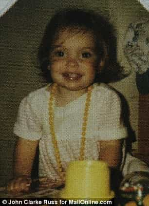

Samseau is a player philosopher psychologist who enjoys a good discussion. You can follow him on Twitter.


As the events surrounding the Boston bombings continue to unfold, lost in the noise of the terror is the wife of one of the bombers. Her name is Katherine Russell, and she is a profound marker in the decline of the American woman. Allow me to explain.

Born in North Kingstown, Rhode Island, Katherine was the oldest of three girls. She grew through an ordinary American life with regular high school proclivities, such as playing the saxophone and doing other high school spirit day activities.
In short, there was nothing special about this woman. She is common American female stock. And that is precisely why the implications are so disturbing.
According to reports, she met Tamerlan Tsarnaev in her Freshman or Sophomore year of college at Suffolk University. Tsarnaev, a recent immigrant from Chechnya, was a young boxer and drinker. He met her at a nightclub, most likely in one of the many immigrant nightclubs that populate the Boston area. Although it is unclear how he seduced her, my guess is that he got her with some Muslim game: intimidating gazes, ramrod straight stances, bottle service, congregating with all of the other jacked immigrants in the nightclub with their top two shirt buttons undone, and then inviting girls back to his table to talk.
Most likely they both frequented the same nightclubs when he noticed her, and made a few attempts to get her back to his place before he went for the close. Given that she was an American woman, she put out right away as she did for so many other men in her freshman and sophmore years.
Wouldn’t you hit it? I know I would.

Of course, given the American dating scene we all know so well, it’s to be expected that their relationship did not consummate into monogamy right away. Most likely she was seeing a few other men, and meanwhile, Tsarnaev, who already had no respect for American culture, was enjoying trying to bang as many non-Islamic Ameri-skanks as he could.
As Tsarnaev was quoted saying, “I don’t have a single American friend. I don’t understand them.” So we know this guy was like many Islamic immigrants who viewed American culture as toxic and full of broken women who are only good for one thing. On this point, I can agree with the Muslims.
However, this all came to a boiling point. With his increasing alienation from American culture, Tsarnaev probably felt a sense of abandonment on how women were throwing their youth away for worthless careers and empty promises. He became more in tune with his faith, went to more Islamic congregations, and fell in love with Katherine.
Now, defenders of American women might think, “Katherine was unaware of how abusive Tsarnaev was before she got involved with him, making it harder for her to leave him.” But the truth is Tsarnaev was already known as a violent man and had been arrested for domestic abuse, before she met him.
In 2009, Tamerlan Tsarnaev was arrested and charged with domestic assault and battery for assaulting his girlfriend in Cambridge, police records show.
“Girlfriend called 911 on her cell phone indicating that she was beat up by her boyfriend,” the police report states. The woman was described as “crying hysterically” and told police that she had been yelling at Tsarnaev “because of another girl.” When asked if he had hit his girlfriend, Tsarnaev told the officer on duty, “Yes, I slapped her,” the police report states.
And since this occurred in 2009, we know that Tsarnaev and Katherine had already met and most likely banged by that point. So Katherine knew this guy was a piece of shit from the get-go, but most likely willfully ignored it in favor of her lusts.
It was not long after Katherine became involved with the mass murderer before she started to receive regular beatings as well:
Her roommate at Suffolk University, who asked not to be identified, told CBS News that Tsarnaev had also been violent with Russell and may have been arrested for assaulting her in 2009 as well.
Being that Katherine was a young American woman, she most likely did not see Tsarnaev, or any man she was banging, as anything beyond fun. But because Tsarnaev was a violent man, using force, coercion, and beatings to keep her from straying, she stayed. Any hint of infidelity resulted in some kind of punishment for Katherine.
Neighbors indicate that the Tsarnaev household was probably not a very happy one.
A man who lived next-door to the Tsarnaevs on Norfolk Street in Cambridge told The Boston Globe that he heard yelling “constantly” and that police would often show up at the Tsarnaevs’ apartment. Another unidentified neighbor spoke of “screaming and arguments,” The Globe reported.
I am not surprised that it took the violence of Tsarnaev’s level to keep a young and beautiful girlfriend in Boston. I know that hookup culture well, and girls actively dump and cheat on men whenever they so please. Men are more likely to be pump and dumped than the women are.
Thus we reach the disturbing conclusion of this story – Katherine was not a victim, she was not a special case, she was an ordinary American woman who represented her culture in every way, and that is precisely why she betrayed it. She was given everything a woman could want in life, and instead she choose to find something, someone – anyone – who could take it away from her. Unsatisfied with her life of being catered on beck and call, of whim and notion, she was drawn to the first man who would remove it all and place chains around her – even if that man hated the country who raised her.
She worked 70-80 hours per week while he collected welfare.
Russell worked 70 to 80 hours, 7 days a week as a home health-care aide, her lawyer, Amato DeLuca, told reporters, and she thought her husband was caring for their toddler at home while she was at work.
And since Katherine was nothing more than an “All-American girl,” it is reasonable to conclude that most American women are exactly like Katherine – unhappy with their spoiled lives who would gladly give it up just for a chance to be enthralled by a powerful man. The women of this country have no more loyalty to the land that raised them, but instead are opportunists looking for a chance to submit in pleasure.
Until that opportunity comes, they will hate on all men who try to be anything good towards them, and act out against them – by denying them sex and relationships, by throwing them in jail with trumped up charges, by stealing their money under the pretense of marriage – until they are forced to stop. And it doesn’t take much to stop them – even a welfare bum like Tsarnaev could do it.
Now, I do not think any man should go around beating women just so he can keep them. This is obviously a shitty, destructive way to live that will only cause you more pain and unhappiness in the long run. Any woman that requires beatdowns in order to remain faithful is a garbage woman who will never make you happy. And yet with the extreme shortage of eligible American women, what is a good American man supposed to do?
Just remember: whereas in many countries around the world, women are forced to endure domestic abuse from their husbands with no hope of justice, here in America we have women rushing with open legs into the crotches of abusers despite a legal system that is designed to “empower” them. I hope your exit strategy is going well.
UPDATE: Since publishing this article on April 25th, I have since been alerted to the following report which has been tracking the “tens of thousands” of Westerners who convert to Islam each year, 75 percent of whom are women. Feels so good to be so right.
Read Next: 10 Best And Worst Countries For An American Man To Find A Wife